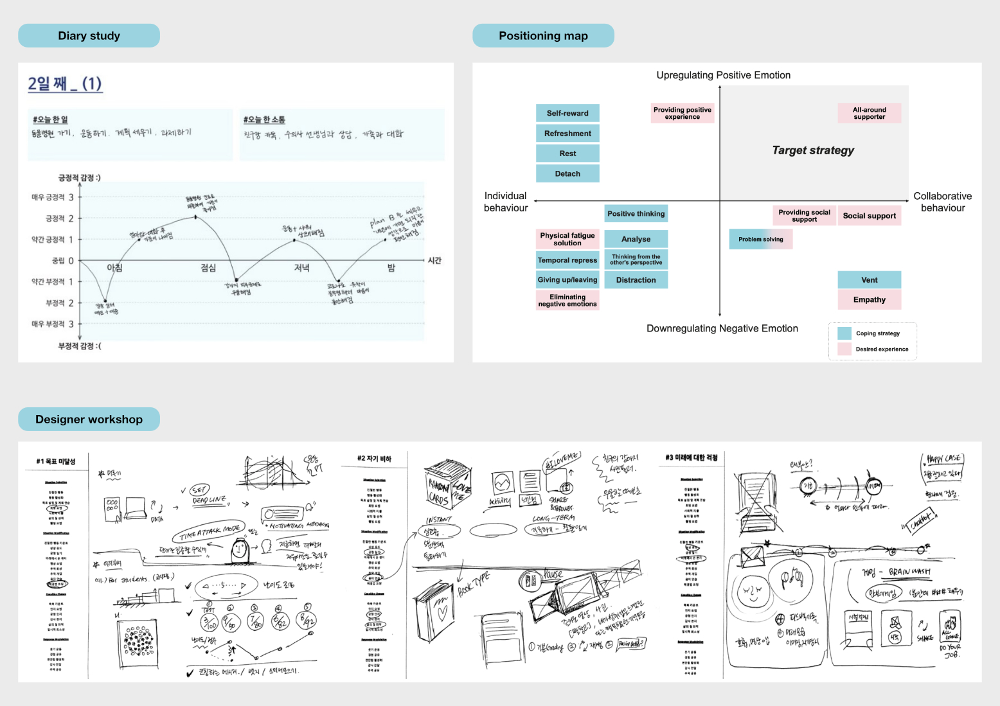
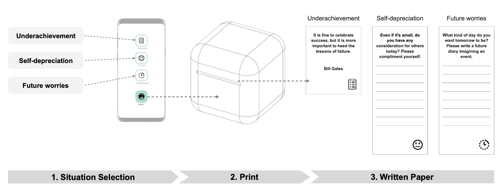

Mitigating Negative Emotions in Anxious Attachment
This project aims to mitigate negative emotions in anxious attachment through an interactive device. Through a diary study and a designer workshop informed by psychological theories, an interactive device, Tutum, was developed and its effectiveness was evaluated through a field study. As a result, the positive effect of the device and the design implications were derived.
How might we mitigate negative emotions in anxious attachment?
This research project aimed to improve user well-being by developing an interactive product for individuals with anxious attachment, because anxious attachment can negatively impact well-being. Given the prevalence of social media and its influence on emotions, this project sought to address the emotional needs of individuals with anxious attachment through the use of an interactive device.

Research process.

A diary study was conducted to examine the behavior of individuals with anxious attachment. Participants recorded their emotional state, specific situations that triggered negative emotions, coping strategies used, and desired coping strategies in daily entries. The collected data was categorized and then analyzed using a positioning map to identify situations related to anxious attachment and effective coping strategies for this attachment style.

During the designer workshop, experts in design generated ideas to alleviate negative emotions for individuals with anxious attachment. Using findings from the diary study and a psychological theory of positive emotion regulation, they developed a total of 30 design concepts for each identified situation. The outcomes were organized into potential experiences and design considerations, which were used as a design strategy for creating experimental stimuli.
Tutum: An experimental stimulus for validation study.
To evaluate the effectiveness of the identified design strategy, a simple prototype of the experimental stimulus named Tutum was created. Tutum was tested over a two-week period, and participants completed surveys twice to assess both short-term and long-term effectiveness. Results revealed that using Tutum was effective in reducing negative emotions related to self-depreciation and future worries in daily activities, but did not show significant impact on underachievement. Additionally, it was found that the benefits of using Tutum were sustained after the experiment ended.
